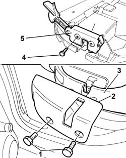

7050A42 rear squab catch device (one) - r+r
- Path
- Procedures > 70 FITTINGS > 7050 REAR SEATS > 7050A rear seat assembly > 7050A42 rear squab catch device (one) - r+r
- Kind
- repair procedure (removal / refitting; the operation number is the code)
- Applies to
- all engines; all production periods
- Interactive page
- https://sloeber94.github.io/elrnDB-fPnd/en/#/2753269
Applies to: all engines; all production periods
 Removing
Removing
 Refitting
RefittingLower the rear seat backrest.
1. Undo the retaining bolts.
2. Remove the protection for the rear seat backrest attachment.
3. Using the cutter, release the cover from the backrest frame until it is possible to gain access to the attachment.
 | Name | Country |
|---|---|---|
- | Scraper blade | 1.878.077.000 |
4. Undo the two fixing bolts.
5. Remove the rear seat backrest attachment.

Applies to: all engines; all production periods
Refitting
RemovingFit the rear seat backrest attachment and tighten the fixing bolt to torque.
 | Fastening | Component | Ø | Value (daNm) |
|---|---|---|---|---|
- | Bolt | REAR SQUAB CATCH DEVICE | - | 2.4 |
Fit the section of the cover moved previously.
Fit the protection for the rear seat backrest attachment.
Tighten the bolts.
Lift up the rear seat backrest.